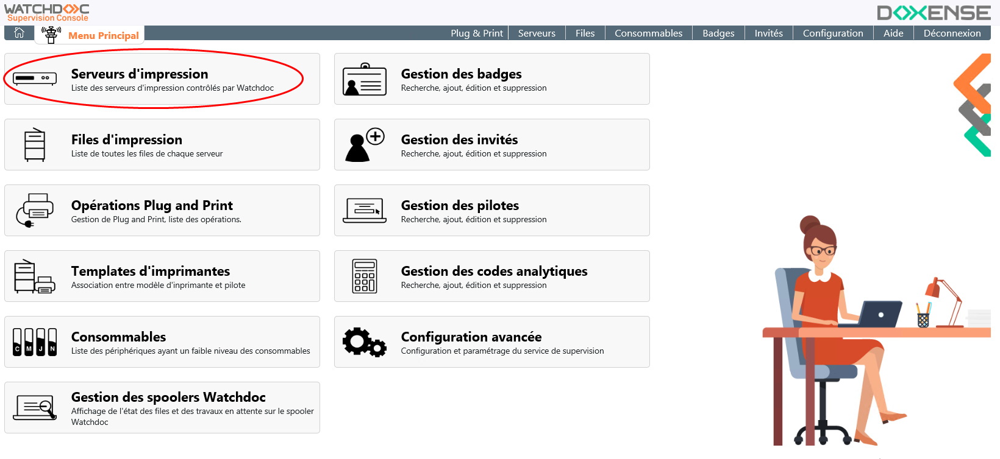
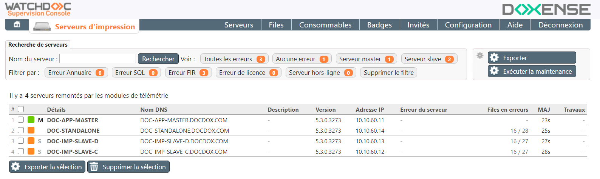
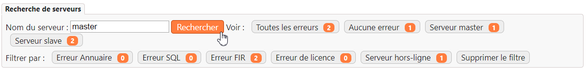
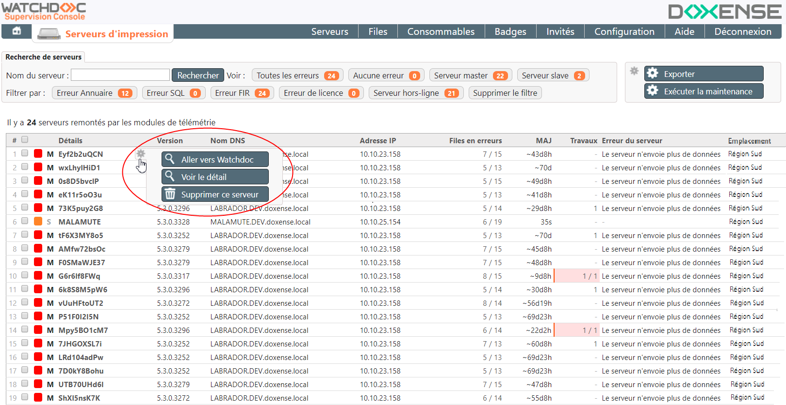
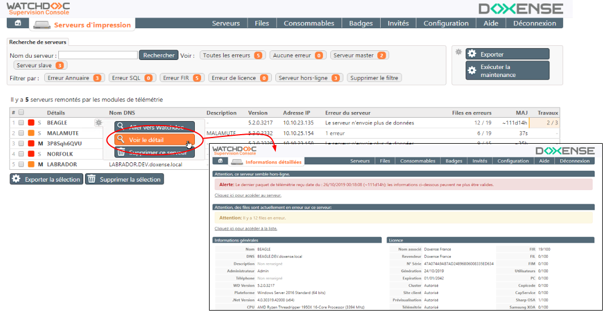

Principe
La Console de Supervision permet d'obtenir des vues détaillées et affinées des serveurs d'impression contrôlés par Watchdoc et notamment les serveurs présentant des dysfonctionnements.
Accéder à l'interface de supervision
Depuis le Menu principal de WSC, cliquez sur bouton Serveurs d'impression ;

→ Vous accédez à l'interface Serveurs d'impression, dans laquelle s'affiche la liste de tous serveurs. qu'ils fonctionnent correctement ou présentent un dysfonctionnement (indisponible, communication impossible, désactivée, en erreur) :

Consulter les incidents d'un serveur
Description de la liste
Dans cette liste, différentes informations relatives aux serveurs sont affichées dans les colonnes suivantes (chaque en-tête de colonne, cliquable, constitue un critère de tri) :
-
Détails : affiche :
-
une pastille de couleur qui indique l'état du serveur :
-
aucun incident n'affecte le serveur, mais des incidents existent sur les files d’impression dépendant de ce serveur ;
-
aucun incident n'affecte le serveur, mais des incidents existent sur les files d’impression dépendant de ce serveur ;
-
au moins un incident affecte le serveur : le service d’impression ne fonctionne plus ou la communication réseau entre WSC et Watchdoc est interrompue.
-
-
Mou S : informe si le serveur est Maître (M = Master) ou non (S = serveur Watchdoc);
-
Nom du serveur ;
-
Emplacement :
 (anciennement "Géosites" dans les versions antérieures à la V6). Dans Watchdoc, un emplacement est un libellé appartenant à une liste structurée de sites géographiques permettant de localiser physiquement des éléments de configuration du parc d'impression (périphériques d'impression, serveurs, files, etc.).
La liste des emplacements est administrable depuis l'interface d'administration de Watchdoc.
Les emplacements sont nécessaires à la fonctionnalité Watchdoc Print Client.site géographique auquel est associé le serveur d'impression ;
(anciennement "Géosites" dans les versions antérieures à la V6). Dans Watchdoc, un emplacement est un libellé appartenant à une liste structurée de sites géographiques permettant de localiser physiquement des éléments de configuration du parc d'impression (périphériques d'impression, serveurs, files, etc.).
La liste des emplacements est administrable depuis l'interface d'administration de Watchdoc.
Les emplacements sont nécessaires à la fonctionnalité Watchdoc Print Client.site géographique auquel est associé le serveur d'impression ; -
Version : affiche la version Watchdoc installée sur le serveur ;
-
Nom DNS : affiche le nom du serveur et le nom de son domaine ;
-
Adresse IP : adresse IP de l’imprimante.
-
Files en erreurs : indique le nombre de files en erreur (par rapport au nombre de files gérées par le serveur). Cette valeur, cliquable, renvoie vers les files en erreur dans la Console de Supervision ;
-
MAJ : temps écoulé depuis la dernière information remontée par le serveur (en jours, heures, minutes et secondes) ;
-
Travaux : travaux d'impression bloqués dans les files shadow du serveur concerné, en attente de sortie (la valeur, cliquable, envoie vers l’ensemble des travaux bloqués sur les files contrôlées). Sur un serveur Watchdoc (excepté le Master), il est possible de purger ces travaux manuellement.
-
Erreur du serveur : lorsque l'état du serveur est rouge, la nature de l'erreur est affichée dans cette colonne leerreur dans le cas d’une alerte en pastille rouge.
Outils de recherche
Vous disposez de différents outils permettant d'affiner la consultation :
-
un moteur de recherche permettant de rechercher par nom de serveur (contenant la chaîne de caractères saisie) ;
-
différents filtres permettant de sélectionner les serveurs en fonction de leur statut ou de la nature de l'erreur :

Procédure de consultation
Pour consulter le détail des erreurs :
-
dans la liste, repérez le serveur dont vous souhaitez consulter l'activité ;
-
cliquez sur le bouton
 pour accéder au menu des actions ;
pour accéder au menu des actions ; -
cliquez sur l'un des boutons d'action :

-
bouton renvoie vers l'interface d'administration de Watchdoc où vous pouvez gérer le serveur défaillant après vous être authentifié comme administrateur pour y consulter le détail des informations relatives à la file :
-
bouton renvoie vers une page détaillant la nature des incidents :

-
bouton permet de supprimer de la liste un serveur qui n'est plus contrôlé par Watchdoc ;
-
bouton
 pour exporter au format .csv toute la liste des serveurs ;
pour exporter au format .csv toute la liste des serveurs ; -
bouton pour exporter au format .csv une partie des serveurs préalablement sélectionnés à l'aide de la case à cocher ;
-
bouton pour supprimer tous les serveurs préalablement sélectionnés à l'aide de la case à cocher.
Exécuter la maintenance les serveurs
La maintenance des serveurs Watchdoc est paramétrée dans la Console de Supervision de Watchdoc (Configuration avancée > Maintenance des serveurs) et exécutée aux dates et heures prédéfinies.
Cependant, s'il est nécessaire d'exécuter la maintenance sans attendre le moment prédéfini, cliquez sur le bouton .